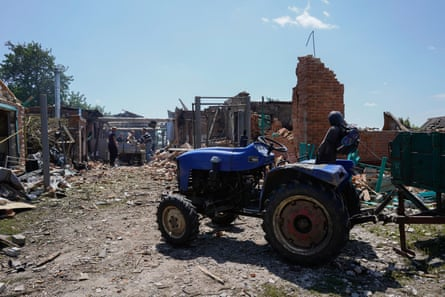
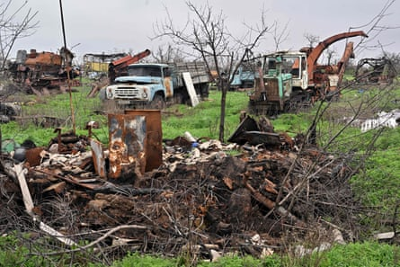
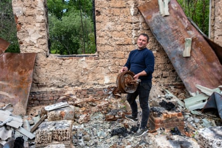
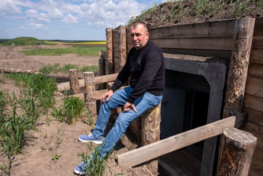
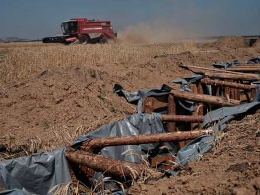
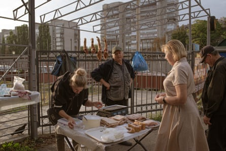
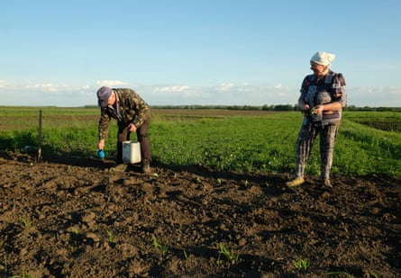

I n a field outside the eastern Ukraine city of Sumy, Mykola Mondrayev, 55, is moving the wreckage of a Russian drone. A pickup truck stands nearby, mounted with a gun, the only defence against the deadly unmanned aerial devices.
Three days a week, Mondrayev serves with a territorial defence unit. The other days he works his fields.
His farm, he says, has not yet been struck by a drone, but even at more than 30km (19 miles) from the frontline, he feels “uncomfortable” that it could be a target.
“The Russians aren’t just hitting military objects. They’re hitting farms as well. Farming is at the heart of Ukraine culture, and that’s what they are trying to destroy,” he says.
On the steppes beyond Sumy, a rural way of life is under threat from the complex set of challenges that war has brought. A quarter of the country’s farmland is under Russian occupation. Fields are contaminated with mines and unexploded ordnance. Farmers and workers have extra duties now as soldiers.
Residents clean up debris from the yard of a house after a Russian drone attack last month in the village of Velykyi Bobryk.Photograph: Global Images Ukraine/Getty Images
The impact of the war is underlined by the fact that before Russia’s full-scale invasion, agriculture was one of the fastest-growing sectors in Ukraine, contributing 10.9% of GDP and providing 17% of domestic employment in 2021.
A military restriction zone forbids farmers in the immediate vicinity of the frontline from working on their land, and further back others have seen fields taken for fortifications.
Then there are less visible issues. Even before the war, rural depopulation was depleting the pool of agricultural labour, a problem that has been exacerbated by conscription, with smaller farms, which are not eligible for exemptions, hardest hit.
“The three years of war have been brutal,” says Oleh Khomenko, director general of Ukrainian Agribusiness Club. “According to the World Bank, the loss has been in the order of $100bn (£74bn), including loss of key infrastructure such as elevators, the loss of farming land and plant and production facilities on top of the loss on the human side, for example labour.
Agricultural machinery destroyed by shelling in the village of Novohryhorivka.Photograph: Sergei Supinsky/AFP/Getty Images
“While we have some exemptions for key agricultural workers, we’re seeing a labour shortfall of 30% in comparison with 10% before the war. We talk to farmers, everyone tells us the same story: a lack of tractor drivers and workers in agricultural production plants.
“That’s on top of the 25% of land that is under occupation. Farmers who have lost their land lose their business because they can’t just relocate elsewhere.”
In regions such as Kharkiv and Sumy, close to the frontlines, the business of farming has become ever more complex, with larger farms requiring security escorts with drone jammers to go into the fields with workers.
The risks involved in farming 30km from the frontline were dramatically brought home to Mykola Panasenko last year when his barn and office in Sumy were hit in two drone strikes a week apart.
As well as growing rye, oats and sunflowers, Panasenko raises sheep, although in reduced numbers since the war began. “It was nearing the lambing season and the drones landed near the flock and the lambs were stillborn.”
While he has found workers to put a new roof on his grain store, his office is gutted, its walls destroyed. He hides his tractor now, when it is not in use, out of sight of the drones under the cover of a thicket.
“There are no workers for the farms,” he says. “Almost everyone has been conscripted either to the army or the territorial units. No one cares.”
Mykola Panasenko stands in the ruins of his farm office in Sumy.Photograph: Peter Beaumont/The Guardian
The impact is cumulative, and goes beyond what it means for his business.
“It has a knock-on effect. Small farmers like us supply the domestic market as well as for export. The local mill buys from us. We support villagers who buy livestock and seeds [for smallholdings]. We hire workers from the local communities. Without the farmers whole villages will die.”
Andriy Sema, 52, tells a similar story. Like Panasenko, he is classed as a small farmer, with 150 hectares (370 acres). He opens his phone to show a picture of a Russian drone shot down on his land in Sumy this spring.
“Some of these surveillance drones are booby-trapped. So farmers are scared to move them. And we hear drones almost every day. Every day it’s getting worse and worse. Every day you hear about one farm or another being hit.
“But the biggest issue since the war began is that there is no stability. We don’t know what will happen tomorrow, or even what will happen today. I don’t know if I want to carry on farming.”
Like many other farms close to the fighting, Sema’s is carved up by the deep zigzags of freshly dug trenches, punctuated with blockhouses, built against Russia’s threat of a fresh offensive targeting the Sumy region.
Andriy Sema sits in front of a newly built military blockhouse in a trench system on his land in Sumy.Photograph: Peter Beaumont/The Guardian
“Before the full-scale invasion, I had 150 pigs. I sold piglets to the local villagers. Now, I have only a few chickens, ducks and turkey. The poultry is more seasonal, while the pigs brought in more money. I’ve lost around a third of my income. We are surviving for now growing rye and sunflowers, which we’re selling to the state.
“I don’t have any workers now. I’m alone on the farm managing with the help of my son. Before, I employed five people.”
Farmers have also seen some grain traders take advantage of the situation, says Sema. “There are three classes of grain. We produce grain that is usually used for baking but the big traders will only pay the lower feed rate of grain saying, ‘Look how close to the frontline. We’re scared to go there. You need to sell at the lowest price.’”
W hile bigger farming businesses have tended to fare better during the war, they have also struggled. “About 20% of our land is in the military restricted zone,” says Serhiy Bondarenko, chief executive of Victoria, which grows wheat, sunflowers and rapeseed on about 45,000 hectares (111,000 acres) of land and employs more than 500 people, but has seen its productivity reduced by 10-15%.
Farmers harvest wheat next to military fortifications in Selydove in July last year. Russia claimed to have taken the town in October.Photograph: Libkos/Getty Images
“In our area it’s worse than it was last year. One of the grain elevators has been damaged, while a second one in Bilopillia is not working because it is so close to the frontline. From the roof you can see the nearest Russian village.
“On top of that, 10% of our workers have been conscripted even though we have the status of critical infrastructure. If not for that, all of our workers would be conscripted.
“Shelling is the biggest problem, because we choose when we need to be in the fields. We have to sow at a certain time. And almost every day there’s shelling but we try to have a couple of hours when our workers can go out. Right now we are sowing soy, and it is always under shelling.
“That puts a big psych pressure on the workers who have families to think about.
“It’s like we have our own combat zone in fields but if we stopped, the company would not exist.
“We have our own security team. They go to the fields to check the location and stay in touch with the military. They have anti-drone guns and after they check the sector where we want to sow, we tell workers when we think is a safe time to start, and then the security team stays with the workers to reassure them.”
Most difficult to assess, however, is the impact on a wider rural way of life centred on about 250,000 odnoosibnyky – Ukraine’s rural families.
Ranging from small commercial family farmers to as subsistence-oriented food producers who use their small holdings to supplement earnings from other sources, odnoosibnyky are a key pillar of Ukrainian rural life.
Produce being sold at a farmers market in Sumy in September.Photograph: Andre Alves/Anadolu/Getty Images
The social and cultural patrimony of odnoosibnyky is visible whenever you venture out of Ukraine’s cities. In villages, cows, goats and sheep can be seen grazing on the broad grass verges, overhung by fruit trees in gardens, with ducks and chickens behind the fences.
On the outskirts of these small communities, families work plots of land, planted with kale and vegetables, or tend to their beehives.
For those closest to the frontlines, there is the dilemma of whether to stay or relocate, especially for the oldest generation.
D espite the small scale of their output, these ubiquitous rural households account for more than a third of domestically consumed agricultural output, producing fruit and vegetables, including the vast majority (95%) of potatoes produced in Ukraine.
“A lot of the focus on Ukrainian agriculture has been on large and medium-sized enterprises,” says Rein Paulsen, director of emergencies at the UN’s Food and Agricultural Organisation.
“Our focus has been on vulnerable households, often on a really small level of production, where people have very small plots of land to grow food for their own consumption, with some selling produce in local markets.
“In frontline communities they’re not registered on databases because they are not considered farming enterprises in the bigger sense.
“One of our priorities is supporting vulnerable people close to the frontlines who want to stay. I was reading about one family that wouldn’t leave their cow behind and needed volunteers to come and help them move it.
Lidia and Viktor are odnoosibnyky, planting kale on their smallholding in Sumy.Photograph: Peter Beaumont/The Guardian
“Obviously, one of the major challenges has to do with the physical risk of unexploded ordnance and soil contamination, and that is a very significant issue for a large number of farming families. And the situation is getting worse.
“We estimate 138,000 sq km are contaminated with unexploded munitions, and water is also at risk. Another challenge is the war has accelerated the shifting demographics, with an increasing proportion of elderly heads of households and now female heads of households.”
And even far from the frontlines, the conflict is affecting the smallest farmers.
“We came across someone in the Lviv area in the far west country far from the frontlines who told us how she was struggling with the doubling of the cost of woodchips,” says Paulsen. “The longer the war goes on, the greater the accumulation of impacts.
“They have been seen as a less visible priority,” he says, referring to the huge international efforts to maintain the flow of Ukrainian grain to countries heavily reliant on it, in the global south in particular.
“But we are talking about the fabric of Ukrainian society, the country’s invisible rural life.”